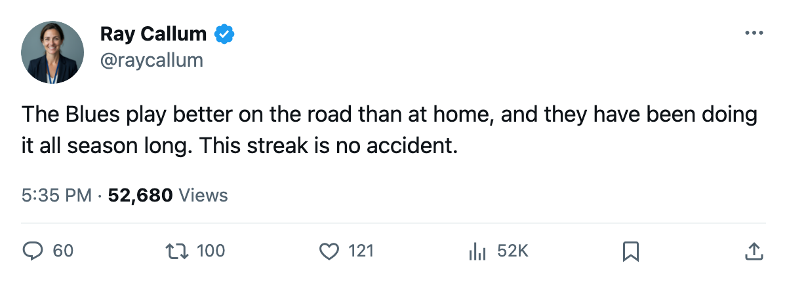

Notes from the West: STL Is 9-3 on the Road and 4-4 at Home
Three clubs in the league win more away than at home, and the Blues own the deepest sample of the three
 Ray CallumSenior correspondent · Home Ice Network
Ray CallumSenior correspondent · Home Ice Network St. Louis Blues sits 2nd in the Western Conference at 29 points, riding a 5-game win streak, and the split underneath the record is stark: the Blues are 9-3 on the road and 4-4 at home.
St. Louis Blues sits 2nd in the Western Conference at 29 points, riding a 5-game win streak, and the split underneath the record is stark: the Blues are 9-3 on the road and 4-4 at home.
Only 3 clubs in the league have more wins on the road than at home. St. Louis Blues has the biggest home-to-road gap of the 3.
| Club | Home | Away |
|---|---|---|
| STL | 4-4 | 9-3 |
| BOS | 4-4 | 8-3 |
| PHI | 4-6 | 7-3 |
The 2 games played since the last edition were road wins. St. Louis Blues took a 4-3 decision at  Washington Capitals on November 19 and won 5-2 at
Washington Capitals on November 19 and won 5-2 at  Philadelphia Flyers on November 21. The 4-3 win at Washington was the tighter of the two.
Philadelphia Flyers on November 21. The 4-3 win at Washington was the tighter of the two.
St. Louis Blues has scored 60 and allowed 52 in 20 games, a plus-8 goal differential. The Blues sit 1 point behind  Dallas Stars at the top of the West and 1 point ahead of
Dallas Stars at the top of the West and 1 point ahead of  Nashville Predators, who carry 28 points from 19 games. At 29 points, St. Louis Blues is 1 off Dallas Stars's league-leading 33, and the home record is the margin: the Stars are 6-2 in their own building where the Blues are 4-4.
Nashville Predators, who carry 28 points from 19 games. At 29 points, St. Louis Blues is 1 off Dallas Stars's league-leading 33, and the home record is the margin: the Stars are 6-2 in their own building where the Blues are 4-4.
The 5-game streak is the longest active run in the Western Conference, shared with Dallas Stars.
The road stretch continues. St. Louis Blues plays at  San Jose Sharks on November 25, the first meeting between the clubs this season, then visits Nashville Predators on November 27 before returning home against
San Jose Sharks on November 25, the first meeting between the clubs this season, then visits Nashville Predators on November 27 before returning home against  Phoenix Coyotes on November 30. San Jose Sharks is 3-6 at home and 7-6-4 overall, sitting 10th in the Western Conference at 20 points.
Phoenix Coyotes on November 30. San Jose Sharks is 3-6 at home and 7-6-4 overall, sitting 10th in the Western Conference at 20 points.
